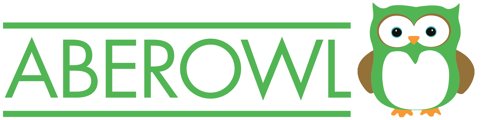

Help
Search in Pubmed
Use in SPARQL query

Super- and Equivalent classes
Superclasses
Equivalent classes
Subclasses
Sub- and Equivalent classes
Try
'ventricular septal defect'
,
part_of some heart
,
develops_from some 'stem cell'
,
'part of' some 'apoptotic process' and regulates some 'apoptotic process'
, or
'has part' some alcohol
.
OWL Class
Ontology
Label
Definition